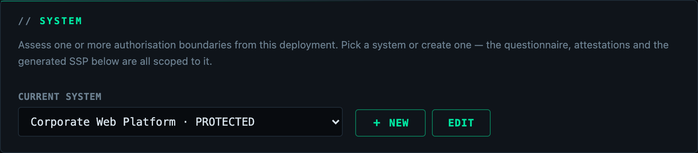
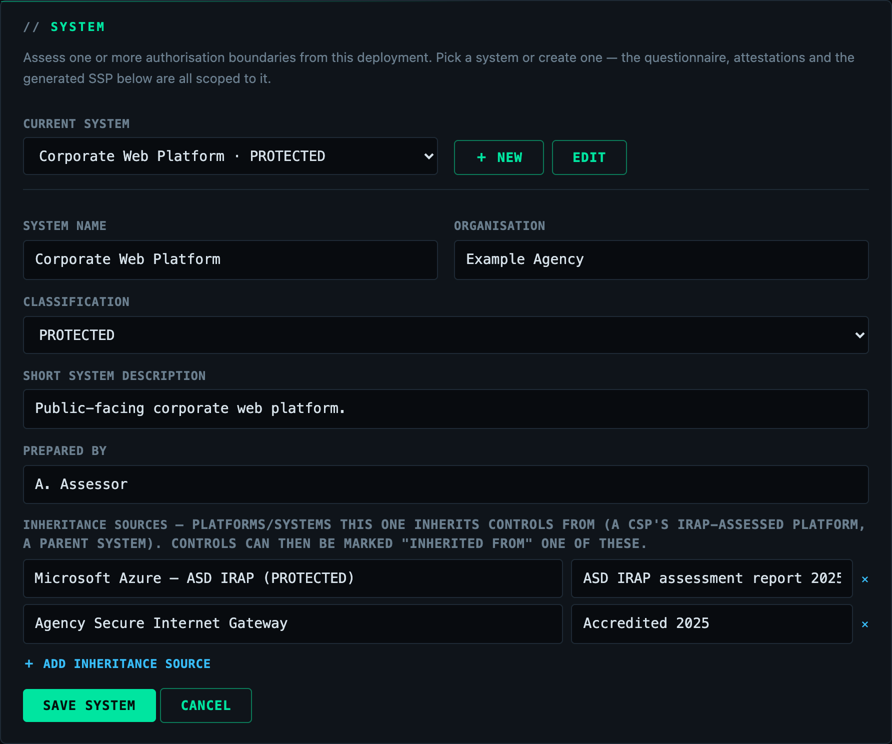
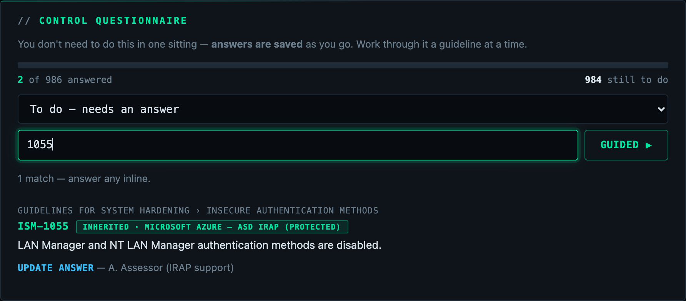
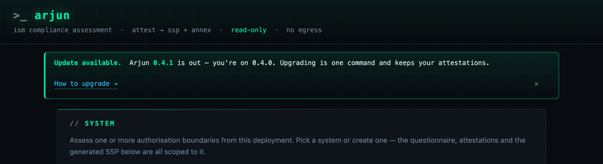

Documentation
Arjun turns the Australian Government ISM into an answerable questionnaire, records
your attestations, and produces the two IRAP artefacts — a System Security Plan
(.docx) and its control-implementation Annex (.xlsx).
It reads nothing from your environment and sends nothing anywhere. The assessment is your own attestations, held in your own database, in your own tenant.
Install
Arjun runs in Azure, in AWS, or on any host that can run a container — the same image and the same application, only the surrounding infrastructure differs. Each install lands in a single resource group / stack you can inspect or delete as a unit.
Azure — Container Apps, Postgres, Entra sign-in
Run in Azure Cloud Shell:
$ curl -sL https://arjunsec.run/install.sh | bash -s -- --region australiaeast
Everything lands in one resource group (default rg-arjun, override with
--resource-group). You need Contributor on that group to create the resources; Arjun
itself reads nothing from the rest of your tenant.
AWS — App Runner, RDS Postgres, Cognito sign-in
Run in AWS CloudShell:
$ curl -sL https://arjunsec.run/install-aws.sh | bash -s -- --region ap-southeast-2
Everything lands in one CloudFormation stack. The service role is granted ReadOnlyAccess
and nothing more.
Sign in
Access is governed by your own identity provider. The Azure install wires Microsoft Entra and the AWS install wires Cognito automatically; a self-hosted deployment can use any OIDC provider. The first operator is invited during install — sign in with your work account.
Using it
- Pick or create a system — the authorisation boundary you're assessing: its name, organisation, classification, and (optionally) the inheritance sources it inherits controls from (a CSP's IRAP-assessed platform, a parent system). Assess as many systems as you like from one deployment; each keeps its own answers.
- Answer the control questionnaire for the selected system. Every applicable ISM control is a question — mark each Effective / Ineffective / Not applicable, or Inherited from one of the system's sources. Progress is saved as you go.
- Brand the report (optional) — your agency's logo and header/footer. The protective marking stays on every page regardless.
- Generate the SSP and Annex for the system. Controls you haven't answered are reported as not assessed, with the reason — never as compliant. Inherited controls are reported distinctly, citing the source and its assessment.



Staying current
Arjun tells you when a newer release is available — a prompt appears in the app, and the footer shows the running version and the ISM catalog it assesses against (e.g. ISM June 2026). The check runs in your browser against the public release feed; the app itself makes no outbound call, so the "sends nothing outside the tenant" promise holds.

Upgrading is one command per platform, image-only — your database, and the attestations in it, are untouched; the app runs its schema migrations on boot:
# Azure — in Azure Cloud Shell $ curl -sL https://arjunsec.run/upgrade.sh | bash # AWS — in AWS CloudShell $ curl -sL https://arjunsec.run/upgrade-aws.sh | bash -s -- --region ap-southeast-2
Self-hosting
The same container runs with any Postgres and any OIDC provider — an on-prem VM, ECS, Kubernetes, or a workstation.
$ docker compose up -d # → http://localhost:8080
Sign-in is off in the bundled compose file, which is safe only because it binds to
localhost. For anything others can reach, set ARJUN_AUTH_ENABLED=true and configure a
provider:
| Variable | Meaning |
|---|---|
ARJUN_OIDC_ISSUER | any OIDC provider (Cognito, Keycloak, Okta, Google Workspace) |
ARJUN_OIDC_CLIENT_ID / ARJUN_OIDC_CLIENT_SECRET | the client credentials |
ARJUN_ENTRA_TENANT_ID / ARJUN_ENTRA_CLIENT_ID / ARJUN_ENTRA_CLIENT_SECRET | Microsoft Entra preset |
Register the callback URL with your provider as https://<host>/login/oauth2/code/oidc
— or .../entra when using the Entra preset.
Attestations — the one thing you cannot regenerate — live in Postgres, not in the container. Arjun runs as a single replica (assessments use an in-memory worker).
Pricing & licence
A flat AUD $100/month for the whole product, on an honour system: nothing is gated, throttled or time-limited, and every feature works whether or not you've paid. If it's useful to your agency, licence it.
Your subscription keeps the ISM controls current in the app: as ASD revises the ISM, updated releases carry the new catalog, and Arjun surfaces the update prompt above. The fee funds keeping the assessment aligned with the standard, not any one download.
Prefer an invoice or PO? Licence enquiries and invoicing — licence@arjunsec.run.
Security & audits
Arjun runs inside your own tenant, reads nothing from your environment, and sends nothing anywhere outside it. It is a single container, a managed database, and sign-in through your own identity provider — a small surface a security architect can approve in an afternoon.
Don't take our word for it. The install templates and the exact permissions it requests are public, and the full source code is available to security teams for review on request. Responsible disclosure and source-access requests — security@arjunsec.run.
Tear down
Everything is one resource group / stack, removed in one go:
# Azure $ az stack group delete --name arjun -g rg-arjun --action-on-unmanage deleteAll --yes $ az group delete -n rg-arjun --yes # AWS $ aws cloudformation delete-stack --region <region> --stack-name arjun